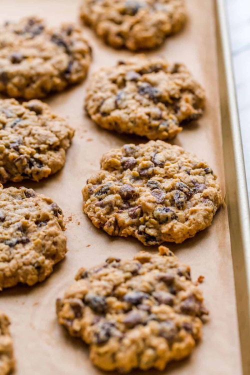
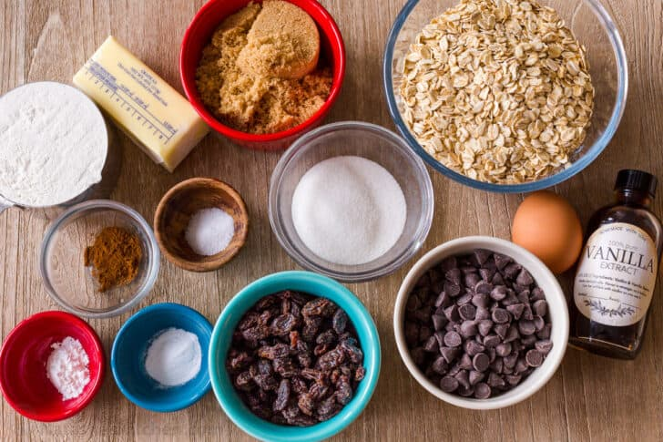
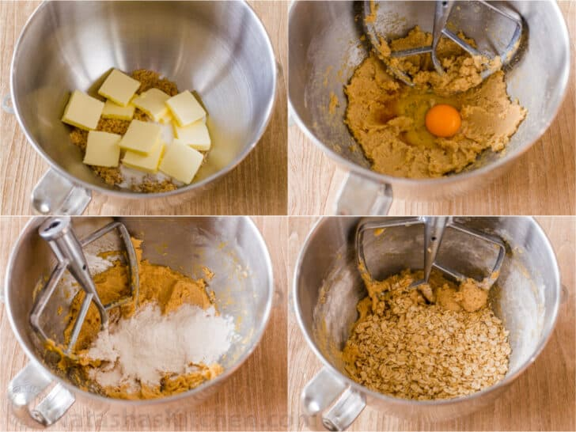
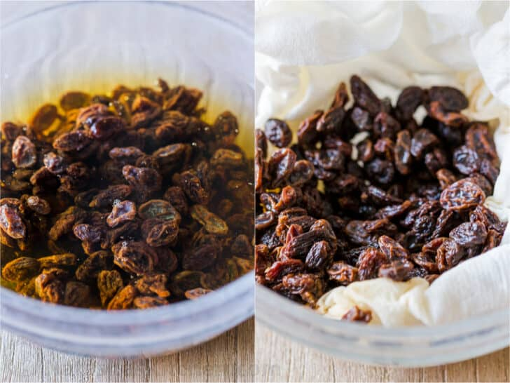

Oatmeal Raisin Cookies Recipe
December 14, 2021
Our all-time favorite Oatmeal Raisin Cookies. These are big, soft, and chewy with melty chocolate morsels. There’s one simple trick that will keep your cookies and raisins moist for days.

Ingredients for Oatmeal Raisin Cookies:
- All-purpose flour – helps the cookie hold together.
- Baking soda and baking powder – combining 2 leavenings gives these rise and a softer texture.
- Cinnamon and salt – add flavor and balance the sweetness.
- Butter – use unsalted and softened at room temperature.
- Sugar – combining packed brown sugar and granulated sugar gives these just the right amount of sweetness and golden color.
- Egg – adds moisture and helps to bind the cookie dough together.
- Vanilla extract – adds flavor and aroma to the cookies.
- Rolled oats (also called “old-fashioned” oats) – give the cookies their signature chewy texture.
- Raisins – add moisture and a tangy sweetness.
- Semi-sweet chocolate chips – make the cookies gooey and irresistible without being too sweet.

How to Make Oatmeal Raisin Cookies
These cupcakes are easy to master and you will be making bakery-quality cupcakes in no time.
- Prep – line 2 baking sheets with parchment paper and pre-soak raisins in warm water for 15 minutes then drain and pat dry.
- Whisk together dry ingredients in a small bowl and set aside.
- Cream butter and sugars in the bowl of a stand mixer. Beat in egg and vanilla. Gradually beat in flour mixture.
- Add oats, raisins and chocolate – mix until combined.
- Scoop dough – Make 2-inch cookie dough balls and place dough balls on prepared baking sheets. Press them down slightly with the back of a measuring cup.
- Bake one cookie sheet at a time for 12-14 minutes at 350˚F. Do not overbake. Cool on the pan for 5 minutes then transfer to a wire rack to cool.

Our Best Tip for Soft & Moist Oatmeal Cookies
Presoak your raisins! It’s a quick step and doesn’t add extra time – I usually do that first while I’m measuring out my other ingredients and preheating the oven. It will make all the difference in how your cookies turn out. Raisins can get really tough and chewy in the oven but pre-soaking ensures they will come out plump and soft. They also keep more moisture in your cookie.
Also, as with any cookie recipe, if you love a soft cookie, make sure you don’t over-bake.
